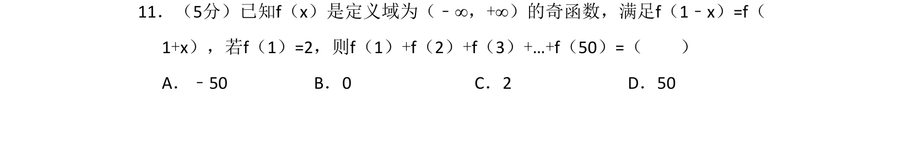
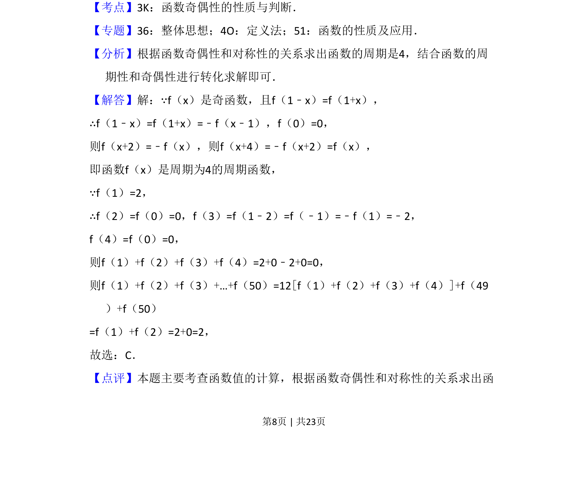
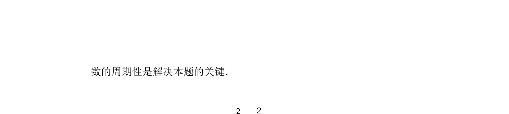

考点：奇偶性 周期性 函数对称性 赋值法

根据奇函数性质和对称轴推导周期，利用周期性和赋值求和。


📄 原 PDF 第 8 页：
素材/真题/吉林/2008-2024·（吉林）数学高考真题/2018年高考数学试卷（理）（新课标Ⅱ）（解析卷）.pdf
11．（5分）已知f（x）是定义域为（﹣∞，+∞）的奇函数，满足f（1﹣x）=f（ 1+x），若f（1）=2，则f（1）+f（2）+f（3）+…+f（50）=（ ） A．﹣50 B．0 C．2 D．50
【考点】3K：函数奇偶性的性质与判断．菁优网版权所有 【专题】36：整体思想；4O：定义法；51：函数的性质及应用． 【分析】根据函数奇偶性和对称性的关系求出函数的周期是4，结合函数的周 期性和奇偶性进行转化求解即可． 【解答】解：∵f（x）是奇函数，且f（1﹣x）=f（1+x）， ∴f（1﹣x）=f（1+x）=﹣f（x﹣1），f（0）=0， 则f（x+2）=﹣f（x），则f（x+4）=﹣f（x+2）=f（x）， 即函数f（x）是周期为4的周期函数， ∵f（1）=2， ∴f（2）=f（0）=0，f（3）=f（1﹣2）=f（﹣1）=﹣f（1）=﹣2， f（4）=f（0）=0， 则f（1）+f（2）+f（3）+f（4）=2+0﹣2+0=0， 则f（1）+f（2）+f（3）+…+f（50）=12[f（1）+f（2）+f（3）+f（4）]+f（49 ）+f（50） =f（1）+f（2）=2+0=2， 故选：C． 【点评】本题主要考查函数值的计算，根据函数奇偶性和对称性的关系求出函